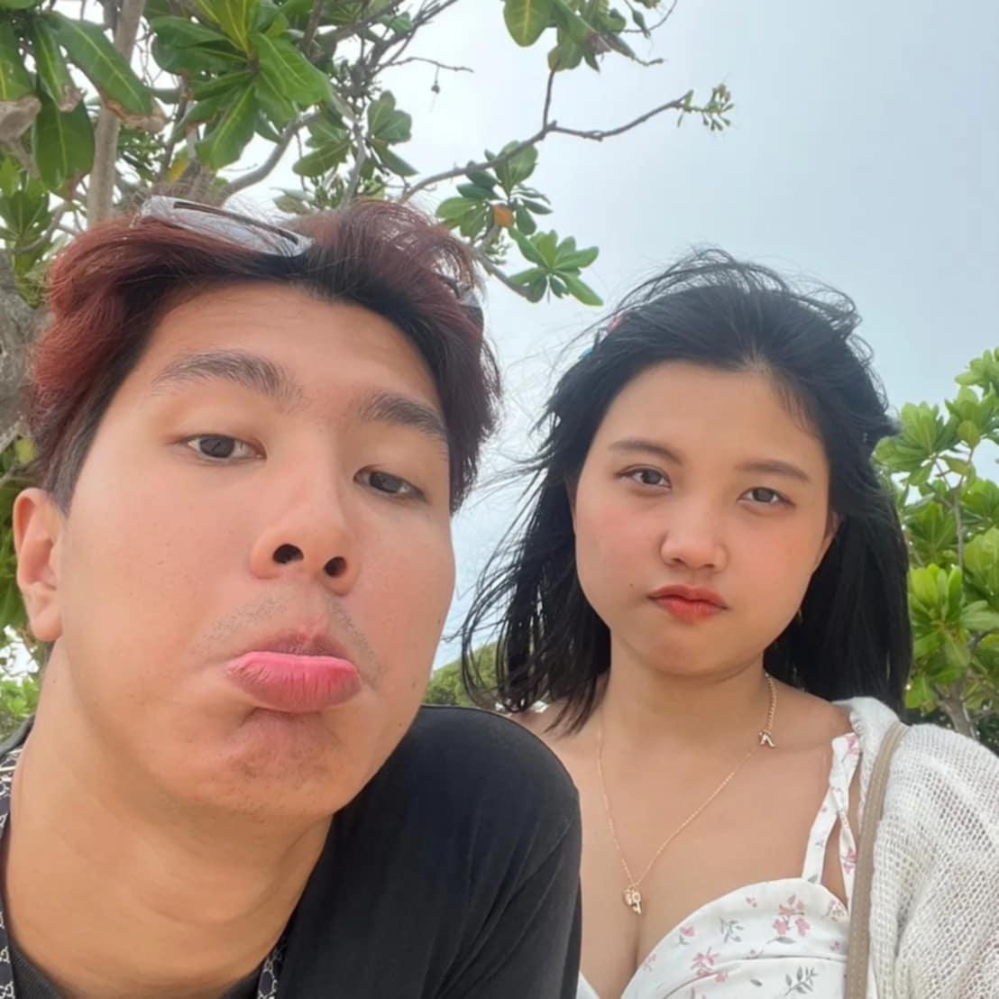

ความสัมพันธ์ที่ยาวนานของนายก้อง
ความรักของผมนั้นเป็นสิ่งที่เกิดขึ้นมาจาก ความบังเอิญที่ทั้งผมและแฟนไม่ได้มีการรู้จักกันแต่อย่างใด แต่กลับกลายเป็นความสัมพันธ์ที่ไม่คิดว่า จะใช้ชีวิตคู่มาได้นานขนาดนี้ ทุกครั้งที่มีความรักผมนั้นก็จะเจอ แต่ความรักที่ต้องทุ่มเทอยู่ฝ่ายเดียว ซึ่งแทบไม่เคยเห็นความพยายามของอีกฝ่ายเลย จนในวันนึงผมนั้นตัดสินใจ จบความสัมพันธ์นั้นลง จนมาเจอคนปัจจุบันที่ไม่คาดว่าจะได้มารู้จัก แฟนผมนั้นเขาเป็นคนที่น่ารัก ตอนจีบกันใหม่ๆ ก็น่ารักกันทุกคู่แหละ แต่จะมีคู่ไหนไหมที่ไม่ว่าจะทะเลาะกัน หนักแค่ไหนก็ไม่เคยปล่อยมือกัน แฟนผมคือคนที่ผม นั้นมั่นใจว่าเขาเป็นแบบนั้น ไม่ว่าจะทะเลาะกันแค่ไหนไม่เคยปล่อยมือกัน เติมเต็มความรักที่มีอยู่ตลอด ไม่ว่าทุกคนจะ รักกันมากแค่ไหน ก็ไม่ได้การันตีว่าความรักนั้นจะยืนยาว สิ่งที่ทั้งสองฝ่ายทำให้กันต่างหากที่ทำให้ชีวิตคู้นั้นยืนยาว นี่แหละคือความสัมพันธ์ที่ยืนยาว